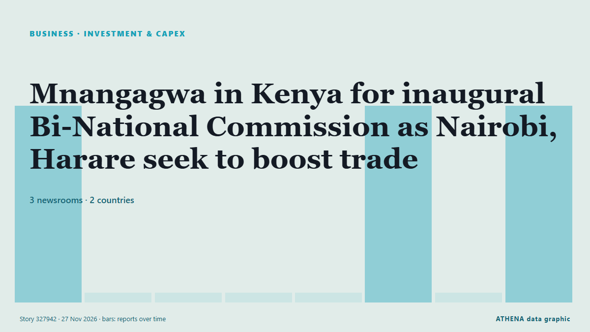

Entreprises et investissement
SponsoriséPrésenté par  Cybernetics and Artificial Intelligence Lab Welcome to the Cybernetics and Artificial Intelligence Laboratory, established at the Department of Business Administration of the National and Kapodistrian University of Athens. The lab is headed by Professor Dimitrios Thomakos. The lab aims to do research that can be published in top venues. Our research uses tools and methods of Artificial Intelligence, and lies in the following areas: - Forecasting - Decision making - Cyber security - Finance We are always looking forward to collaborating with exceptional students!
Cybernetics and Artificial Intelligence Lab Welcome to the Cybernetics and Artificial Intelligence Laboratory, established at the Department of Business Administration of the National and Kapodistrian University of Athens. The lab is headed by Professor Dimitrios Thomakos. The lab aims to do research that can be published in top venues. Our research uses tools and methods of Artificial Intelligence, and lies in the following areas: - Forecasting - Decision making - Cyber security - Finance We are always looking forward to collaborating with exceptional students!
Les titres sont affichés en anglais, tels que publiés.

InvestissementsMnangagwa in Kenya for inaugural Bi-National Commission as Nairobi, Harare seek to boost trade
NAIROBI, Kenya, Nov 27 – Zimbabwean President Emmerson Mnangagwa arrived in Nairobi on Thursday evening ahead of high-level talks with President William Ruto aimed at expanding trade and investment… de Capital FM Kenya
| 14 nov. | 38 |
|---|---|
| 15 nov. | 36 |
| 16 nov. | 99 |
| 17 nov. | 88 |
| 18 nov. | 88 |
| 19 nov. | 86 |
| 20 nov. | 64 |
| 21 nov. | 40 |
| 22 nov. | 39 |
| 23 nov. | 77 |
| 24 nov. | 94 |
| 25 nov. | 84 |
| 26 nov. | 68 |
| 27 nov. | 9 |
Christmas shopping season starts in Europe
The car park will also operate extended hours to facilitate people's Christmas shopping, as the busiest time of the year for shopping begins. de Irish Mirror
MSC Cruises takes delivery of LNG-powered MSC World Asia
MSC Cruises has taken delivery of MSC World Asia from Chantiers de l’Atlantique in Saint-Nazaire, France, adding the third LNG-powered vessel in its World Class series to the fleet. de Container News
Gelato scoops up Singapore’s frozen dessert market
Home-grown artisans and international players are fuelling a boom in the local gelato scene with myriad unique flavours and interpretations. de The Business Times
Nigeria: President Tinubu Felicitates ADC Presidential Candidate Atiku Abubakar At 80
[Presidency Nigeria] I extend my warmest congratulations to former Vice President and African Democratic Congress Presidential Candidate, Alhaji Atiku Abubakar, on his 80th birthday today, November… de AllAfrica
US maker of Marlboro cigarettes mulls over bid for Imperial Brands
Altria Group said it was also in talks with a third party over a possible offer for part of Imperial Brands. de Evening Standard (London)
Full list of Poundland stores in London as retail chain collapses into administration
Around 11,000 jobs are at risk as the discount retailer falls into administration. de Evening Standard (London)
Irish equestrian teams likely to compete at LA Olympics despite Horse Sport Ireland liquidation
There was concern around the eventing and showjumping teams following the news that Horse Sport Ireland will enter liquidation. de TheJournal.ie
Lawal strengthens Zamfara Forest Guards, reaffirms decision not to negotiate with bandits
“We must urgently reclaim Zamfara’s vast ungoverned areas, which have become safe havens for bandits, criminals and terrorists,” the governor said. de Premium Times
U.S.-led consortium agrees to acquire Lukoil's international portfolio in share-swap deal
An Eldridge-led consortium that includes the U.S. de World Oil
Before the Sell-Off, AI Stocks Showed Dot-Com-Level Bubble Signals: Study
A study of 170 years of financial journalism suggests AI stocks rivaled dot-com bubble levels, but estimates vary. de Decrypt
Climate negotiations: If COP31 cannot, what will?, By Samuel Stephen Wakdok
Given the outcome of COP31, countries like Nigeria that are prone to climate disruptions should take the events of COP31 as a strategic warning. de Premium Times
SUARDIAZ adds 5,500-CEU car carrier to Atlantic Line
SUARDIAZ Group has added the 5,500-CEU car carrier RS Atlantico to its Atlantic Line, increasing capacity for vehicle and rolling cargo shipments between Morocco and Europe. de Container News
Tata Trusts challenge Chandrasekaran's reappointment, seek Rs 65 crore damages
Tata Sons is looking to make changes to its articles of association in anticipation of an upcoming initial public offering. de Times of India
EDB Investment in Uzbekistan Could Reach $3 Billion by 2031
The Eurasian Development Bank (EDB) could invest a total of $3 billion in Uzbekistan by 2031 under plans discussed in. de The Times of Central Asia
Flipkart leadership shake-up: CEO Kalyan Krishnamurthy to step down after 11 years
Balaji Thiagarajan to take interim charge; Krishnamurthy's exit marks a leadership transition at Flipkart amid IPO uncertainty, profitability questions and growing ESOP liquidity concerns. de Business Today India
Unification minister nominee vows pragmatic North Korea policy
Unification Minister nominee Hong Ihk-pyo on Thursday called for a pragmatic approach to reviving inter-Korean relations, prioritizing working-level engagement over high-level talks while… de Korea Herald
Himera raises $5 million to expand military communications business
"This investment allows us to advance technologies that help Ukrainian defenders carry out their missions more effectively," said Misha Rudominski, Himera's co-founder and CEO. de Kyiv Independent
Lawsuit alleges Trump strong-armed Intel
The president apparently threatened the Intel board with "consequences" if they did not accept his demand for a 10% stake on the company. de Tom's Hardware
PPC acquires five companies in Romania
PPC subsidiaries PPC Productie Romania and PPC Renewables Romania have signed agreements with Navios Investment SRL for the acquisition of 100% of the share capital of five companies in Romania.… PPC… de Naftemporiki (English)
PepsiCo India to invest ₹868 cr in new foods manufacturing facility in Tamil Nadu
Spread across about 28 acres at the SIPCOT Industrial Park in Kannudaiyanpatti village, the facility will manufacture its snacking brands Lay’s and Kurkure and is expected to commence commercial… de The Hindu BusinessLine
S-Oil completes W9tr Shaheen petrochemical project
S-Oil marked the completion of its Shaheen petrochemical complex in Ulsan on Wednesday, capping South Korea’s largest-ever petrochemical investment as the refiner moves to expand its chemicals… de Korea Herald
Christchurch head curator hoping for ‘balanced contest’ in India vs New Zealand 2nd Test
Christchurch: Stumped by the absolute flat track in the opening Test in Wellington, both India and New Zealand will be hoping for a more sporting pitch in the winner-takes-all second and final game… de Deccan Herald
Investment firm Cerberus to buy space business of US Airbus arm
Airbus intends for its US subsidiary to “double down” on production of autonomous aircraft as the market for drones continues to expand, the company said. de Breaking Defense
Wärtsilä supplying engines for four more ‘fuel-flexible’ Royal Wagenborg EasyMax vessels
Wärtsilä will be supplying its Wärtsilä 25 engines for four new 14,000 DWT EasyMax 2.0 general cargo vessels that are being built at the Royal Niestern Sander shipyard for the Netherlands-based… de Bunkerspot
Four listed boxship owners have 90-98% of 2027 fixed as MPC's quarterly revenue falls 10%
MPC Container Ships reported a US$2.2bn charter backlog with 90% of 2027 covered, up from 55% a year earlier, after Euroseas, Global Ship Lease and Danaos reported 2027 cover of more than 90%, 98%… de Container Magazine
Cost-of-living strike in Greece hits trains and planes
Greece's R&D spending reached €4.06 billion in 2025, up 12%, as the country expands investment in artificial intelligence and innovation. de Greek City Times
Huawei found guilty in trade secrets theft case
A federal jury in the Eastern District of New York returned guilty verdicts following a three-month trial against Huawei Technologies Co., Ltd. de US Department of Justice news
Google to shut down Nest app, Google Assistant on smart home devices in 2027
Google is announcing some significant changes to its smart home software. de The Verge
Small Businesses Are Not Thankful for Trump’s Thanksgiving Tariff Surprise
Thought you had heard the last of President Trump’s tariffs? de Inc.
Police declare Arise News owner Nduka Obaigbena, others wanted for threatening FirstBank CEO
Mr Nduka Obaigbena claimed he did not receive an invitation concerning any investigation from the police or any law enforcement agency at any of his addresses. de Peoples Gazette
Eni's Vår Energi to acquire ConocoPhillips' assets in Norway and UK for $2.5 bn
(ANSA) - ROME, 23 NOV - The Norwegian oil and gas producer Vår Energi—in which Eni is the majority shareholder—is set to acquire ConocoPhillips' upstream assets in Norway, along with related… de ANSA English
Amazon to sell cars online in UK from next year
It will be the first time the Silicon Valley firm has expanded its Amazon Autos operation beyond the US. de Evening Standard (London)